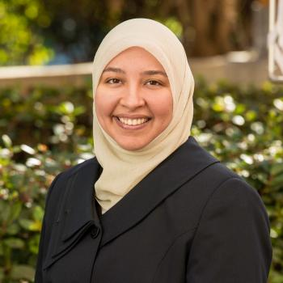

Chaplaincy
Chaplain Name
Chaplain
Add a short bio here.

Dr. Rania Awaad
Associated Chaplain
Rania Awaad, M.D. is a Clinical Professor of Psychiatry at the Stanford University School of Medicine where she is the Director of the Stanford Muslim Mental Health & Islamic Psychology Lab as well Stanford University's Affiliate Chaplain. She also serves as the Associate Division Chief for Public Mental Health and Population Sciences as well as the Section Co-Chief of Diversity and Cultural Mental Health. In addition, she is a faculty member of the Abbasi Program in Islamic Studies at Stanford University. She pursued her psychiatric residency training at Stanford where she also completed a postdoctoral clinical research fellowship with the National Institute of Mental Health (NIMH).